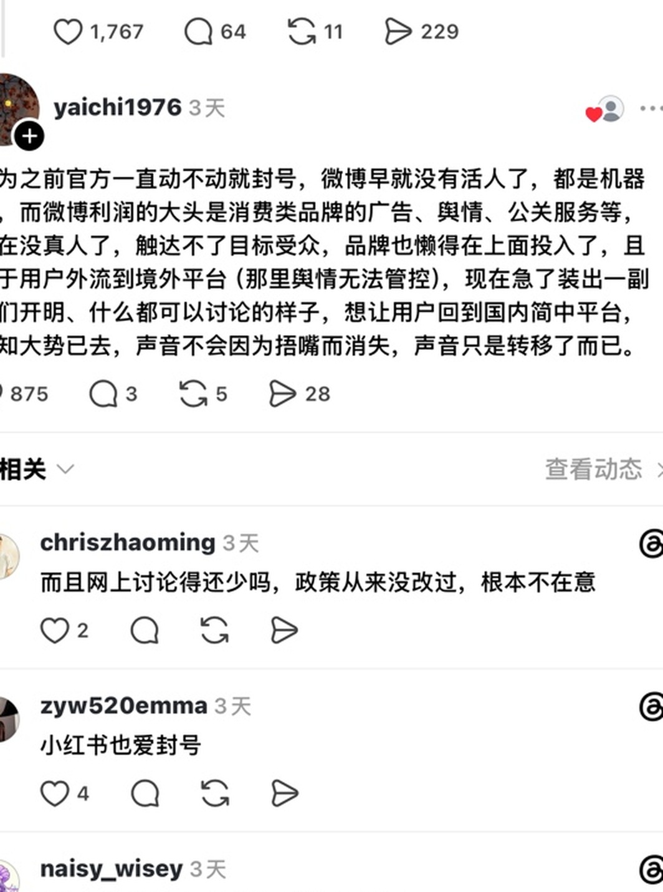

优势是推理速度快、单次成本较低，适合稳定、高频、边界清晰且数据量大的场景；局限是依赖高质量标注样本，对新事件、新黑话和隐晦表达适应较慢，每次迭代通常需要重新训练和部署。
第二部分
思考与探索
安全服务能力 用户留存与体验 AI探索
安全服务能力
问题
模型能力与协作效率
①业务信息传递存在损耗
运营熟悉具体治理场景，但算法主要依据需求文档和样本训练，较难完整掌握饭圈黑话、谐音、反讽及事件语境，模型结果容易与真实业务口径产生偏差。
②问题发现与修复链路较长
每次调整通常需要经历“运营提需—算法训练—运营评估—问题反馈—算法再训练”，问题往往到验收阶段才集中暴露，难以快速响应突发舆情和高频变种内容。
③模型与策略能力缺少协同
算法模型、大模型、关键词和规则等能力尚未根据场景进行清晰分层，可能出现简单问题使用高成本模型、复杂语义又依赖规则硬匹配的情况。
思考
提升模型与真实治理业务的适配度
重点不应只是“开发更多模型”，而是提升模型与真实治理业务的适配度，并明确规则、传统算法模型、大模型和人工审核各自的能力边界，形成运营能够参与业务输入和效果评估的分层治理方式。
优势是语义理解和泛化能力较强，能够结合上下文识别反讽、谐音、黑话及复杂攻击关系，也可辅助样本生产和案例归因；局限是成本和响应耗时较高、输出存在波动，对审核口径和业务知识依赖较强，未经业务适配不宜直接作为最终处罚依据。
算法侧主导训练的大模型，业务准确率偏低
落地
从自身能够参与的环节入手
算法模型
提需阶段的精细化
协作方式
大模型
积累大模型适配的业务场景
思考大模型在整个审核链路中的作用
探索方向
可探索建设一个面向审核场景的，让运营便捷配置业务标准、提示词和评估样本的，产运即配即用的模型生产平台，通过运营自己训练微调，使算法能力更贴近业务场景。
标准配置→
样本与标注→
训练或微调→
效果评估→
错误回流
用户留存与体验
问题
收集自豆瓣、小红书、threads等“饭圈用户”聚集的平台。
从饭圈用户的视角看，大家不是完全不用微博了，而是觉得它没以前好用了。

大家比较不满的点，主要有两个：
想讨论的事，常常没声量。
没有活人，氛围太差。
所以用户想要的是——能顺畅表达，不会被不健康的内容骚扰。
思考
用户留存，生态策略能做什么？
关注低质、底线内容：仍应优先处理开盒、引导网暴等直接伤害用户的内容，处理刷量、互撕、丑图、大字报等直接影响社区氛围和用户观感的内容。
舆情管控基建：持续补充饭圈中高危风险用户圈定，红黑粉圈定，为紧急舆情做好策略准备。
规则透传：处理结果尽量向用户说明原因，把规则透传到每一位主启DAU用户甚至每一个普户，协同社区团队。
动态维护策略：关注误伤情况，及时完成归因和调优，将误处置情况降低。
单个策略准确率巡检：积累错误样本、及时关注低处置、低准确率的策略，从根源减少误伤，推动异常策略优化，且减少机审压力。
落地
形成误伤治理 sop
01 关注误伤现有策略评估中重点关注误伤情况
02 筛高误伤策略申诉较多、人工复审撤销较多
03 抽样看数据判断是策略问题还是标准迭代问题
04 细化规则对重复出现的问题针对性细化
05 形成 sop目前在做：收集客诉中的误伤case，分析策略归属和误伤原因
AI探索
数据获取—标准判定—结果输出—问题回流
策略准确率自动化巡检助手：让策略问题从“事后发现”转向“主动预警”
流程图

→
→
→
→
→
① 巡检配置：配置策略过检提示词 → 抽样规则 → 预警阈值 → 词表。左侧闭环：提示词优化。
② 数据获取和样本抽取：自动导出命中数据 → 去重 → 按照规则抽样 → 校验。
③ AI 过检：模型策略判定（根据提示词过检，识别语义）；关键词策略判定（根据词表、结合提示词过检）。输出判定结果：正确 / 错误 / 不确定。
④ 指标计算：准确率 → 误处置率 → 置信度校验。
⑤ 数据可视化：写入结果表 → 异常策略报警 → 趋势报告。
⑥ 风险回溯：模型类策略（调整模型阈值 | 增加误伤区分特征 | 模型迭代）；关键词策略（优化词库 | 增加隔离 | 策略下线）。
提效点
风险认知+策略优劣感知
1~2h
人工单策略准确率评估
约5min
Agent 单策略准确率评估
9.15
饭圈刷量控评策略准确率预警后，更改 rag 提示词，准确率回升至正常
巡检后落表能够观测大盘策略、单个策略的准确率趋势；每周一/周三/周五钉钉提醒巡检，提高策略巡检频率；特殊舆情节点or策略爆量时快速巡检。
以配置化口径完成过检，降低不同人员间的判断漂移，且过程可追溯；积累的错误样本天然可以支持提示词迭代。
将误处置样本沉淀进入误伤治理 SOP，支撑“巡检—预警—归因—调优—复验”的闭环。
落表原图


能力边界与展望
工程层面：后台授权需要人工完成，无法 100% 无人值守定时跑，授权过期会中断巡检。
模型能力层面：过检类型和量级受模型能力限制，只能过检文本策略、只能抽样过检而非全量，小样本策略的准确率波动大，结论置信度有限；边缘语境、反讽、隐晦表达仍可能误判。
其他：提示词需要动态维护，策略和业务方向变化需要重调提示词。
展望：策略自动化抽检接口
开发支持自定义配置的策略抽检接口，按周期（如每日）自动抽样微博、评论、图片策略召回数据，接入 AI 大模型完成准确率监测，人只做最终确认。
线索上报助手：将“人工逐条清洗”转化为“标准化语义筛选”
流程图

→
→
→
① 任务配置与数据获取：确认任务范围（选择微博/评论策略、解析日期范围）→ 生成并校验查询参数（策略 ID、业务类型、起止时间一致）→ 触发后台查询（查询完成后创建一次导出任务）→ 精准下载并确认落盘（按任务 ID 触发下载，定位工作目录中的 CSV）。
② 文件校验、字段适配与唯一化：原始 CSV 质检（确认可解析、非空、字段完整）；微博策略以 mid 去重，保留 mid / uid / 内容；评论策略以处出ID去重，保留处出ID / 发布者(UID) / 评论内容；顺序化清洗，保留首次记录并校验唯一性，原始 CSV 全程留存。
③ 风险线索语义审核：聚焦内容语义，仅依据内容序列判断，排除身份与标签干扰 → 分层智能筛选，明确相关保留，模糊、疑似、信息不足删除 → 排他核心风险：组织动员 / 资金行为 / 线下聚集 / 舆情冲突。转发内容二次判断 + 相关空转按原始 mid 唯一保留 + 结果回取原始字段值。
④ 结果生成、质量校验与交付：生成标准 Excel（按策略固定三列，保持原值与原始顺序）→ 交付质量校验（列结构、唯一键、顺序与原值）→ 清理并交付（移除中间文件，保留结果与原始 CSV）。最终交付可直接用于北京地区粉丝风险线索上报的标准化 Excel。流程产出：结构统一、语义聚焦、质证可控的风险线索清单。
提效点
基础任务的自动化替代
30min+
人工导出并逐条复核上报
1~10min
Agent 导出并清洗（约 60%+ 压缩）
复用性
将线索要求和审核口径固化，组内成员可按统一标准执行，减少个人经验差异和重复培训成本；减少误报与无效信息，快速过滤通过关键词策略召回的无关内容。
展望：拓展到更多线索上报场景
复用于风险线索上报流程中，如后续网信办、公安关注的场景集中、上报频繁的重点舆情。